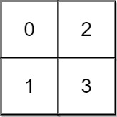
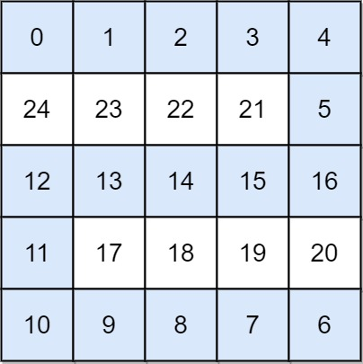

778. 水位上升的泳池中游泳
按高度从低到高逐格「入水」并用并查集合并邻居，起点终点首次连通时的水位就是答案。
思路
- 答案 = 连通 (0,0) 和 (n−1,n−1) 的一条路径上的最大格高，要最小化这个最大值。
- 想象水位 t 从 0 涨到 n²−1：高度 ≤ t 的格子逐个「入水」，入水就和已入水的四邻合并（并查集）。
- 值互异 ⇒ 按
pos[v]顺序加格子即可；每次合并后查起点终点是否同根，首次连通时的v即答案。 - 正确性：路径上任一格高 ≤ 当前水位，且连通恰好由本次新增的格子和它的并集促成，最大格高就是
v。
图解
最优解
1class Solution {2 private int[] pa;3 4 public int swimInWater(int[][] grid) {5 int n = grid.length, N = n * n;6 pa = new int[N];7 for (int i = 0; i < N; i++) pa[i] = i;8 int[] pos = new int[N]; // pos[v]：高度为 v 的格子的下标（值互不相同）9 for (int i = 0; i < N; i++) pos[grid[i / n][i % n]] = i;10 // 高度从低到高逐格入水：每入水一格就和已入水的邻居合并11 for (int v = 0; v < N; v++) {12 int c = pos[v], r = c / n, col = c % n;13 if (r > 0 && grid[r - 1][col] < v) union(c, c - n);14 if (col > 0 && grid[r][col - 1] < v) union(c, c - 1);15 if (r < n - 1 && grid[r + 1][col] < v) union(c, c + n);16 if (col < n - 1 && grid[r][col + 1] < v) union(c, c + 1);17 if (find(0) == find(N - 1)) return v; // 首次连通时的水位就是答案18 }19 return N - 1;20 }21 22 private void union(int a, int b) {23 pa[find(a)] = find(b);24 }25 26 private int find(int x) {27 while (pa[x] != x) {28 pa[x] = pa[pa[x]]; // 路径减半29 x = pa[x];30 }31 return x;32 }33}题目
在一个 n x n 的整数矩阵 grid 中，每一个方格的值 grid[i][j] 表示位置 (i, j) 的平台高度。
当开始下雨时，在时间为 t 时，水池中的水位为 t 。你可以从一个平台游向四周相邻的任意一个平台，但是前提是此时水位必须同时淹没这两个平台。假定你可以瞬间移动无限距离，也就是默认在方格内部游动是不耗时的。当然，在你游泳的时候你必须待在坐标方格里面。
你从坐标方格的左上平台 (0，0) 出发。返回 你到达坐标方格的右下平台 (n-1, n-1) 所需的最少时间 。
示例 1:

输入: grid = [[0,2],[1,3]]
输出: 3
解释:
时间为0时，你位于坐标方格的位置为 (0, 0)。
此时你不能游向任意方向，因为四个相邻方向平台的高度都大于当前时间为 0 时的水位。
等时间到达 3 时，你才可以游向平台 (1, 1). 因为此时的水位是 3，坐标方格中的平台没有比水位 3 更高的，所以你可以游向坐标方格中的任意位置
示例 2:

输入: grid = [[0,1,2,3,4],[24,23,22,21,5],[12,13,14,15,16],[11,17,18,19,20],[10,9,8,7,6]] 输出: 16 解释: 最终的路线用加粗进行了标记。 我们必须等到时间为 16，此时才能保证平台 (0, 0) 和 (4, 4) 是连通的
提示:
n == grid.lengthn == grid[i].length1 <= n <= 500 <= grid[i][j] < n2grid[i][j]中每个值 均无重复
题面取自力扣当前版本。
数据快照 2026-11-04。题面版权归力扣所有，本站点仅供本人学习使用，请勿对外发布。